| The mystery | Verdict | How sure | Evidence | Historians | Read | |
|---|---|---|---|---|---|---|
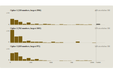 | The Beale CiphersWhether the three Beale ciphers of 1885 are genuine or a hoax | A hoax, about 95 in 100: a treasure story written and partly enciphered | about 95 in 100, a composite judgement | Strong | Agrees withGillogly, King, Mateer, Nickell and Kruh; Hammer held the ciphers genuine | Case pageFull reportFiles (640) |
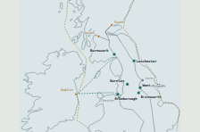 | Where was Brunanburh?Where the battle of Brunanburh, won by Æthelstan in 937, was fought | Bromborough, on the Wirral, at roughly 60 in 100, first among several possible sites | roughly 60 in 100 on the weights chosen | Leading candidate | Agrees withCavill, Harding, Jesch, Coates and Downham; Wood, Halloran and Breeze dissent | Case pageFull reportFiles (40) |
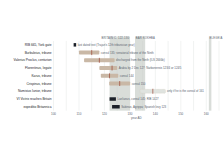 | The Last Decade of the Ninth LegionWhere the Ninth Legion ended, after its last dated text of 108 | Probably ended in Britain, about 122 to 130; about 50 to 65 in 100 | about 50 to 65 in 100, central readings | Probable | Agrees withHodgson, Graafstal and Ritterling; other positions from Campbell, A.R. Birley and Keppie | Case pageFull reportFiles (33) |
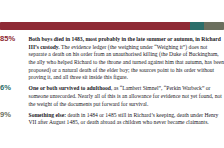 | The Princes in the TowerWhether Edward V and his brother died in the Tower in 1483 | Both died in Richard III's custody in the Tower, 1483: about 85 in 100 | about 85 in 100 | Probable | Agrees withRoss, Horrox, Pollard, Hicks, Cunningham, Horspool and Skidmore; Langley opposed | Case pageFull reportFiles (9) |
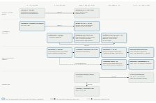 | The Hanging GardensWhere the hanging garden stood: Babylon, Nineveh, or no single structure | Babylon, more likely than not, 55 in 100; no single structure 35; Nineveh 10 | about 55 in 100 | Probable | Agrees withBichler and Rollinger, Bagg, Potts and Pedersén; Dalley opposed | Case pageFull reportFiles (20) |
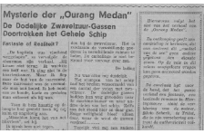 | The Ourang MedanWhether the Ourang Medan lost her whole crew in 1947 or 1948 | Fabricated: written by Silvio Scherli in Trieste in 1940; invented outright about 85% | about 85 in 100 invented outright | Strong | Agrees withPaijmans's 2021 account, whose paper trail it completes; Hargraves and Skeptoid | Case pageFull reportFiles (100) |
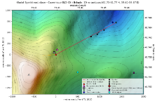 | Dyatlov PassWhy nine skiers left their tent in 1959, and what crushed three | Cold killed six and snow crushed three; natural causes about 90 in 100 | about 90 in 100 natural causes | Probable | Agrees withIvanov's 1959 verdict and the prosecutors' 2020 ravine placement; Buyanov dissents | Case pageFull reportFiles (82) |
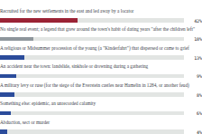 | The Pied Piper of HamelinWhat happened to Hamelin's 130 children on 26 June 1284 | Probably a real loss, 80 in 100; recruited emigration east ranks first at 42 | 80 in 100 a real loss; emigration 42 | Leading candidate | Agrees withDobbertin, Udolph, Humburg, Mieder and the Museum Hameln; Hucker opposed | Case pageFull reportFiles (11) |
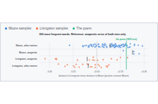 | Who wrote "A Visit from St. Nicholas"?Who wrote the poem that begins 'Twas the night before Christmas | Clement Clarke Moore wrote it, about 85 in 100; Livingston 12, someone else 3 | about 85 in 100 for Moore | Probable | Agrees withthe traditional attribution, Nissenbaum, Kaller and Norsworthy; Foster and Jackson opposed | Case pageFull reportFiles (266) |
| Nefertiti and SmenkhkareWho ruled between Akhenaten and Tutankhamun, and was King Neferneferuaten Nefertiti | Nefertiti reigned as King Neferneferuaten, about 89 in 100; Smenkhkare a separate man | about 89 in 100 | Probable | Agrees withDodson, Allen and Kawai; Reeves, Gabolde, Laboury and Krauss opposed | Case pageFull reportFiles (39) | |
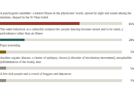 | The dancing plague of 1518What caused the Strasbourg dancing of 1518, and whether anyone died | A behavioural epidemic among the poor, about 85 in 100; ergot rejected | about 85 in 100 | Probable | Agrees withClementz, Bischoff, Midelfort and Martin; shifts the popular account (Waller, Wikipedia) | Case pageFull reportFiles (188) |
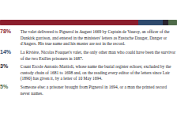 | The Man in the Iron MaskWho was the masked prisoner who died in the Bastille in 1703 | The valet delivered to Pignerol in 1669, entered as Eustache Dauger: 78 in 100 | 78 in 100 | Probable | Agrees withLair, Petitfils, Noone, Sonnino and Wilkinson, at lower confidence; Funck-Brentano opposed | Case pageFull reportFiles (82) |
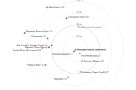 | The Roanoke ColonistsWhat became of the 1587 colonists left on Roanoke Island | Main body's seat on the Albemarle mainland, about 68 in 100; Croatoan 17 | about 68 in 100 | Leading candidate | Agrees withHorn and Lawler's split-and-absorption reading, at lower confidence; Quinn and Dawson opposed | Case pageFull reportFiles (104) |
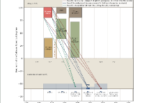 | The Great Chicago FireHow the O'Leary barn in Chicago caught fire on 8 October 1871 | A flame carried into the barn, about 85 percent; the carrier cannot be identified | about 85 percent; no candidate above 30 | Leading candidate | Agrees withthe Board of Police, Andreas and Smith; differs from Bales on Sullivan | Case pageFull reportFiles (1759) |
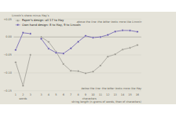 | The Bixby letterWhether Lincoln or his secretary John Hay composed the 1864 Bixby letter | Lincoln, narrowly, about 53 percent against Hay's 42 | about 53 percent for Lincoln | Unsettled | Shiftsthe post-2019 tilt to Hay (Burlingame, Grieve) back to near even, provisionally | Case pageFull reportIndependent check: the blind rerun's reportFiles (296) |
| Double Falsehood and CardenioWhether Theobald's 1727 Double Falsehood descends from Shakespeare and Fletcher's lost Cardenio | Fletcher wrote the second half, Shakespeare probably part of the first; 64 in 100 | about 64 in 100 | Probable | Agrees withHammond, Taylor and the New Oxford Shakespeare on Fletcher; Stern opposed | Case pageFull reportFiles (532) | |
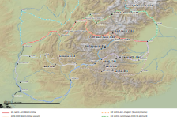 | Hannibal's route over the AlpsWhich Alpine pass Hannibal and his elephants crossed in 218 BC | The Col du Clapier, first at about 40 in 100; Traversette second, Mont-Cenis third | about 40 in 100 for the Clapier | Leading candidate | Agrees withPerrin, Walbank, Lazenby, Lancel, Hunt and Hornblower on the Clapier; Mahaney opposed | Case pageFull reportFiles (181) |
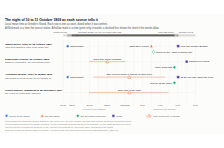 | The death of Meriwether LewisWhether Lewis shot himself at Grinder's Stand in 1809 or was murdered | Lewis shot himself, about 85 in 100; homicide about 15, accident under 1 | about 85 in 100 for self-infliction | Probable | Agrees withPhelps, Jackson, Cutright, Holmberg and Peck; Fisher, Guice, Starrs and Gale opposed | Case pageFull reportFiles (101) |